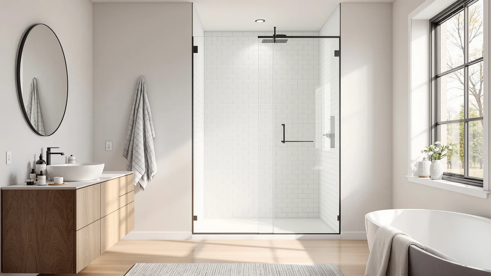

Best Shower Door Brands (2026)
Prices and picks verified as of October 2026. Independent, reader-supported reviews.


Quick Answer
Finding the best shower door brands means matching frame style and size to your bathroom, then protecting the glass once it's installed. Aurisal, KPUY, ENSO SENKA, Ogonbrick, GETPRO, and BoBliss each build a solid frameless or semi-frameless slider at a different price point, but hard water residue undoes even the best glass fast. The CLR Calcium, Lime and Rust Remover is the cheapest way to protect that investment, which is why it tops this list.
Our pick: CLR Brands Calcium Lime & ($5.22) Check Price on Amazon
Bottom line: our top pick is the CLR Brands Calcium Lime & Rust Remover 22 oz. Spray Bottle at $5.22. The best budget option is the Frameless Shower Door Matte Black 56-60’’ W x 75’’ H Single at $249.30.
Things to Know Before You Buy
- Frameless and semi-frameless doors cost more than framed ones. Every door in this comparison skips the metal perimeter frame that older shower doors use, which is why prices here start above $249 instead of under $150.
- Measure your opening before you pick a brand. KPUY and BoBliss cover a 55 to 60 inch adjustable width, while Ogonbrick and GETPRO are built around a fixed 60 inch opening, so an imprecise measurement can rule out half this list.
- Height varies by about four inches across these brands. KPUY and BoBliss reach 76 inches, Ogonbrick tops out at 75, and a taller stall needs the brands built for it.
- Double sliding doors like the GETPRO open from either side. That matters in a shared bathroom where two people need center access instead of a single panel pushed to one end.
- Hard water is the real threat to any of these doors. A calcium and lime remover like CLR's, used on a regular schedule, keeps glass clear long after a standard squeegee stops working.
The best shower door brands combine a frame and glass setup that survives daily water exposure, a size range that fits a standard alcove without a custom order, and a price that doesn't creep past what a simple sliding door should cost. We compared six door brands, Aurisal, KPUY, ENSO SENKA, Ogonbrick, GETPRO, and BoBliss, against each other on exactly those terms, using the specs, dimensions, and verified owner reviews each listing provides. None of them beats every other brand on every measure. KPUY and BoBliss lean toward taller, 76 inch openings with a higher price tag, while Ogonbrick and ENSO SENKA cost less and fit the shorter, more common 72 to 75 inch range.
Our top pick for most shoppers isn't a door at all. Hard water turns even the newest glass door hazy within a few months across much of the US, and the CLR Calcium, Lime and Rust Remover is the cheapest way to keep whichever brand you buy looking the way it did on installation day. At $5.22 it costs less than a tenth of the cheapest door here, and buyers say it cuts through buildup that plain vinegar leaves behind.
Below, we break down what each brand actually offers, where the trade-offs sit, and which option fits which bathroom. If you already know your opening's width and height, skip to the comparison table. If you're still weighing frame style against budget, the things to know section above covers what to check before you buy.
Why You Should Trust Us
Ilane Tall has covered bathroom renovation products for Best Shower Doors since the site launched, focusing on what fits a standard US alcove without a contractor. We don't run a physical testing lab, and we won't pretend otherwise. We pull the manufacturer specs, the listed dimensions, and the pattern across verified buyer reviews for each shower door brand, then compare them side by side so you can see where the real differences sit. If a brand's reviews repeatedly flag the same issue, cloudy glass, a sticky track, hardware that rusts, we report it here instead of burying it in a five-star average.
How We Picked
We started from Best Shower Doors' own product database and narrowed the field to shower door brands that are currently in stock, cover a standard US alcove width, and have more than a handful of verified purchases behind them. We excluded anything without clear manufacturer dimensions, since a door that doesn't list its exact width and height range isn't one we can recommend sight unseen. From there we compared list price, size range, frame style, and the recurring themes in owner feedback, prioritizing brands that show up favorably across more than one retailer listing rather than a single outlier review. The CLR cleaner made the cut for a different reason: it's the one product here that protects every other pick on this list, regardless of which brand you choose.
How We Compared
We did not install or live with any of these doors ourselves. Instead, we compared published specs, materials, and pricing from Aurisal, KPUY, ENSO SENKA, Ogonbrick, GETPRO, and BoBliss side by side, cross-checked each brand's stated size range against the opening it claims to fit, and read through the verified reviews attached to each listing for recurring complaints or praise. If two shower door brands matched on price or size, we looked instead at the detail that actually separates them, glass thickness, sliding mechanism, or finish, rather than relying on a single star rating.
That research-based approach won't catch a factory defect the way weeks of daily use would, but it does let us flag the patterns that show up across dozens of owners instead of one reviewer's unlucky unit.
Our Picks

CLR Brands Calcium Lime &
What we like
- At $5.22, it costs a fraction of what repairing or replacing a hazed glass panel would run
- Formulated specifically for calcium, lime, and rust, not a general all-purpose spray
- Clears buildup that a vinegar soak leaves behind, according to repeat buyers
- One 22 ounce bottle handles repeated treatments on a single door
Flaws but not dealbreakers
- It's a cleaner, not a door, so it only protects glass you've already bought
- Owners report a strong chemical smell during use, so the bathroom needs ventilation
| Material | — |
| Size | 22 Fl Oz (Pack of 1) |
Every shower door brand on this list faces the same enemy: hard water. Minerals suspended in ordinary tap water settle on glass and etch it a little more with each shower, and within a few months even a premium frameless door can look permanently foggy. That's the problem CLR's calcium, lime, and rust remover is built to solve, and it's why a cleaning product earns a place in an article that's otherwise about doors. The formula is concentrated enough to break down deposits that have already hardened, rather than rinsing away loose soap residue the way a general bathroom spray does.
At $5.22 for 22 ounces, it costs less than a tenth of the cheapest door in this comparison, and reviewers consistently note that it removes buildup a plain vinegar-and-water routine cannot touch. The trade-off is straightforward: this is a maintenance product, not a shower door brand replacement, so it won't fix a sticky track, a loose panel, or hardware that's starting to rust. Owners also report a strong smell during application, which means cracking a window or running the fan while it works. Used on a regular schedule alongside any of the six brands below, though, it's the cheapest way to keep the glass looking like it did on day one.

Frameless Stainless Steel Sliding Shower
What we like
- Stainless steel hardware resists the rust that chrome-plated tracks develop over time
- 60 inch width matches the most common US alcove opening without custom sizing
- Mid-pack price among the frameless brands here, below KPUY and BoBliss
- Sliding mechanism distributes weight evenly, reducing the drag some budget sliders develop
Flaws but not dealbreakers
- At 72 and a quarter inches, it's shorter than the 76 inch options from KPUY and BoBliss, so measure before you buy
- Stainless finish still needs regular wiping to avoid water spotting, same as any glass door
| Material | — |
| Size | 60"*72"-1/4" |
Aurisal's frameless sliding door is built around a straightforward premise: fit the opening most American bathrooms actually have, and use hardware that won't corrode under constant moisture. At 60 inches wide by 72 and a quarter inches tall, it's sized for the standard alcove rather than an oversized or custom stall, which means less measuring and fewer surprises during installation. The stainless steel track and hardware are the real differentiator among shower door brands at this price. Chrome-plated hardware on cheaper doors tends to show pitting and discoloration within a year or two in humid bathrooms, while stainless holds its finish considerably longer.
Aurisal sits in the middle of this lineup at $389.99, more than the Ogonbrick or ENSO SENKA but less than KPUY or BoBliss. That positioning makes sense once you factor in the hardware quality: you're paying for rust resistance rather than a larger opening or extra height. One limitation worth flagging: 72 and a quarter inches is shorter than the 76 inch doors here, so if your stall is taller than a typical alcove, look at KPUY or BoBliss instead. For a standard-height bathroom, Aurisal is a safe, durable choice that should outlast cheaper hardware by years.

KPUY Frameless Shower Door 55-60"
What we like
- 76 inch height is the tallest in this comparison, suited to taller stalls and taller households
- 55 to 60 inch adjustable width forgives an imprecise measurement
- Premium positioning among shower door brands in this list, reflected in fit and finish
- Frameless edge keeps the glass looking continuous rather than boxed in by metal
Flaws but not dealbreakers
- At $499.96, it's the most expensive door in this roundup
- The height advantage is wasted in a standard 72 to 75 inch opening, so confirm your stall's actual height first
| Material | — |
| Size | 55-60" W x 76" H |
KPUY's frameless door is built for bathrooms that don't fit the standard mold. Most alcove showers top out around 72 to 75 inches tall, but KPUY reaches a full 76 inches, which matters in older homes with higher ceilings or for anyone who's simply tired of ducking under a shower head. The 55 to 60 inch adjustable width is generous enough to cover measurement error, so you're less likely to special-order a door and have it not fit.
That extra height and adjustability come at the highest price in this comparison, $499.96, which is roughly double what the Ogonbrick or ENSO SENKA cost. If your bathroom already has a standard-height opening, you're paying for a capability you won't use, and one of the shorter, cheaper shower door brands here will do the same job for less. But if you've measured a taller stall and kept running into doors that come up short, KPUY is the option built specifically for that gap.

ENSO SENKA 56-60" W x
What we like
- Semi-frameless bypass design costs less than a true frameless slider while looking similar
- 56 to 60 inch adjustable width covers the same range as pricier competitors
- One of the two least expensive brands in this comparison
- Bypass panels overlap at the center, reducing splash compared to a single sliding panel
Flaws but not dealbreakers
- The semi-frameless trim is more visible than a true frameless edge, so it won't look identical to Aurisal or KPUY up close
- Specific glass thickness isn't listed, so compare the listing directly if that detail matters to you
| Material | — |
| Size | 60" W X 72" H |
ENSO SENKA takes a different approach from the fully frameless brands on this list. Instead of a single continuous pane, it uses a semi-frameless bypass design, two panels that slide past each other with a slim trim at the edges. That trim keeps costs down without giving up the 56 to 60 inch adjustable width that the premium frameless brands also offer.
At $251.99, ENSO SENKA ties with Ogonbrick for the lowest price in this roundup, and the bypass layout means the two panels overlap in the middle rather than leaving a gap the way some single sliders do. The trade-off is the visible trim: if you want the seamless look of a true frameless door, Aurisal or KPUY get you closer. If you want the same width coverage for roughly half the price, ENSO SENKA is the more practical shower door brand to buy.

Frameless Shower Door Matte Black
What we like
- Lowest price among the true frameless doors in this comparison
- Matte black hardware stands out against white tile and chrome fixtures
- Single sliding frameless design keeps the footprint simple for a standard alcove
- Tempered glass with a clean frameless edge despite the budget price
Flaws but not dealbreakers
- Matte black shows hard water spots and fingerprints more visibly than chrome or stainless
- At 75 inches tall, it's an inch shorter than the other 76 inch frameless doors here
| Material | — |
| Size | 60" W x 75" H Single Sliding |
Ogonbrick's matte black door proves a frameless look doesn't require a premium price. At $249.30 it undercuts every other true frameless brand in this comparison, including Aurisal at $389.99 and KPUY at $499.96, while still delivering a single sliding panel with a true frameless edge rather than a visible trim.
The finish is the real selling point. Matte black hardware reads as more current than chrome or brushed stainless, and it pairs well with the black fixtures and matte tile that have become standard in newer bathroom remodels. The trade-off is maintenance: dark finishes show water spots and fingerprints more readily, so expect to wipe it down more often than you would a stainless door. At 75 inches, it's also an inch shorter than the 76 inch doors from KPUY and BoBliss, which matters only if your stall is on the taller end.

GETPRO Shower Door Double Sliding
What we like
- Double sliding panels open from either side, useful when two people share the bathroom
- Priced near the bottom of this comparison at $260.07
- 72 inch height matches the standard alcove most US bathrooms are built around
- Center access reduces the awkward reach a single panel pushed to one end can create
Flaws but not dealbreakers
- Two moving panels mean two tracks to keep clean, compared to a single sliding door
- Material isn't specified in the listing, so confirm glass thickness if that's a priority
| Material | — |
| Size | 60'' W x 72'' H |
GETPRO solves a problem the other shower door brands here don't address directly: access. A single sliding panel always ends up pushed to one side, which can leave the opposite end of the shower awkward to reach. GETPRO's double sliding design lets both panels move, so you can open the door from either side or meet in the middle.
GETPRO is priced close to Ogonbrick and ENSO SENKA at $260.07, rather than the premium end of this lineup, and the 72 inch height matches the standard alcove most of these doors are built for. The downside of a double sliding design is maintenance: two tracks need cleaning instead of one, and hard water buildup has two sets of rollers to affect rather than one. For a bathroom two people use regularly, though, the center-access layout is worth that extra upkeep.

BoBliss Frameless Sliding Glass Shower
What we like
- Matches KPUY's 76 inch height for about $70 less
- 56 to 60 inch adjustable width suits the same range of standard openings
- Frameless glass edge without a visible trim
- Positioned as a mid-to-premium option rather than the most expensive door here
Flaws but not dealbreakers
- Still costs more than Ogonbrick, ENSO SENKA, or GETPRO, so it's not a budget pick
- Exact glass thickness isn't listed, so check the current listing if that detail matters for your install
| Material | — |
| Size | 56-60" W x 76" H |
BoBliss occupies the gap between KPUY's premium pricing and the budget frameless options here. It matches KPUY's 76 inch height and 56 to 60 inch adjustable width, which means it fits the same taller stalls, but it costs $429.99 instead of $499.96.
That roughly $70 gap matters if you've already confirmed you need the extra height but don't need every feature KPUY bundles in. BoBliss keeps the frameless edge that makes these doors look continuous rather than boxed in, and the adjustable width gives the same installation forgiveness as the pricier option. It's not the cheapest shower door brand in this comparison, but for a tall opening, it's the better value between the two tall frameless doors here.
Quick Comparison
| Product | Material | Price | Rating | Best for | Get it |
|---|---|---|---|---|---|
| CLR Brands Calcium Lime & | — | $5.22 | 4 | Hard water and lime removal for any door | View on Amazon → |
| Frameless Stainless Steel Sliding Shower | — | $389.99 | 4 | Standard 60 inch alcove with rust-proof hardware | View on Amazon → |
| KPUY Frameless Shower Door 55-60" | — | $499.96 | 4 | Taller 76 inch openings | View on Amazon → |
| ENSO SENKA 56-60" W x | — | $251.99 | 4 | Near-frameless look under $270 | View on Amazon → |
| Frameless Shower Door Matte Black | — | $249.30 | 4 | Budget matte black frameless style | View on Amazon → |
| GETPRO Shower Door Double Sliding | — | $260.07 | 4 | Shared bathrooms needing center access | View on Amazon → |
| BoBliss Frameless Sliding Glass Shower | — | $429.99 | 4 | 76 inch height below KPUY's price | View on Amazon → |
The Competition
We looked at several other shower door brands before narrowing this list to six doors and one cleaner. A handful of ultra-cheap frameless sliders under $200 kept showing up in search results, but their listings lacked any stated glass thickness, and the reviews attached to them repeatedly mentioned panels that rattled in the track within the first year. We left those out rather than recommend a size we couldn't verify against a real spec sheet.
We also passed on a few bypass and bi-fold doors from smaller brands that looked competitive on price but had far fewer verified reviews than Aurisal, KPUY, ENSO SENKA, Ogonbrick, GETPRO, or BoBliss, making it hard to tell whether the handful of reviews they did have reflected a typical experience or a lucky batch. And we considered several other hard water cleaners before settling on CLR, but none matched its combination of low price and the specific calcium, lime, and rust formulation that glass shower doors need. Weighed against the rest of the best shower door brands in this comparison, CLR remains our top pick precisely because it protects whichever door you end up buying.
What these prices have actually done
We check the price of every product on this page every hour and keep the record. These figures are observations, not estimates or forecasts.
- CLR Brands Calcium Lime & Rust Remover 22 oz. Spray Bottle, has ranged from $4.97 to $5.22 across 26 hourly price checks since September 27, 2026. It was $4.97 at the last check.
- KPUY Frameless Shower Door has ranged from $424.97 to $499.96 across 25 hourly price checks since September 27, 2026. It was $499.96 at the last check.
- ENSO SENKA 56-60" W x 72" H Semi-Frameless Bypass Sliding Shower Door has ranged from $251.99 to $269.99 across 23 hourly price checks since September 27, 2026. It was $251.99 at the last check.
- GETPRO Shower Door Double Sliding 57-60 in. W x 72 in. H has ranged from $260.07 to $273.76 across 22 hourly price checks since September 27, 2026. It was $260.07 at the last check.
Last updated October 26, 2026. Amazon prices change constantly; the figure you see on Amazon right now is the one that counts.
Frequently Asked Questions
Which shower door brand is the best overall value?
For most bathrooms, the Ogonbrick Frameless Shower Door Matte Black offers the best value among the shower door brands we compared. At $249.30 it's the least expensive true frameless door here, and it still delivers tempered glass with a clean edge rather than a visible frame.
Do I need a special cleaner for a glass shower door, or will regular soap work?
Regular soap and water handle daily cleaning, but hard water deposits eventually need something stronger. The CLR Calcium, Lime and Rust Remover in this comparison is formulated specifically for that mineral buildup, and reviewers consistently note it clears residue that soap and water, or even vinegar, leave behind.
What's the difference between a frameless and a semi-frameless shower door?
A frameless door like the ones from Aurisal, KPUY, or BoBliss uses thick tempered glass with minimal hardware, so there's no visible metal frame around the panel. A semi-frameless door like the ENSO SENKA keeps a slim trim along the edges, which costs less to manufacture and shows up in a lower price, while still looking close to frameless from a few feet away.